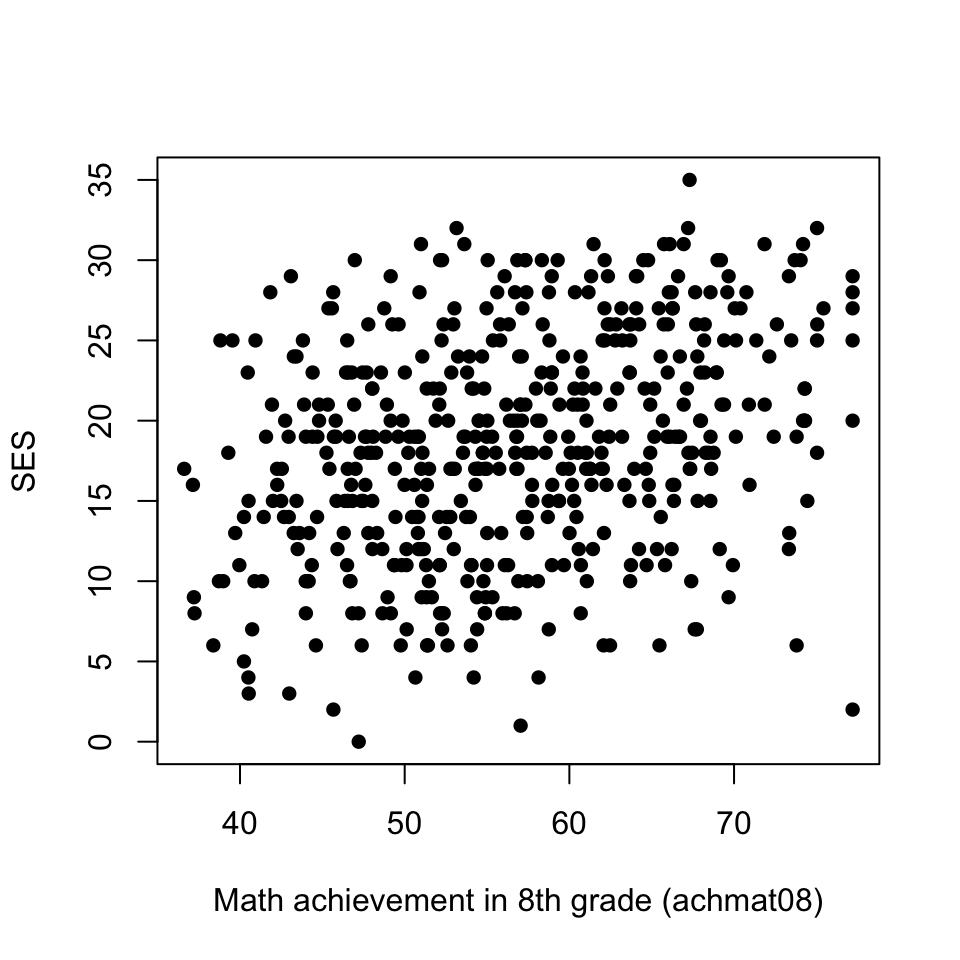
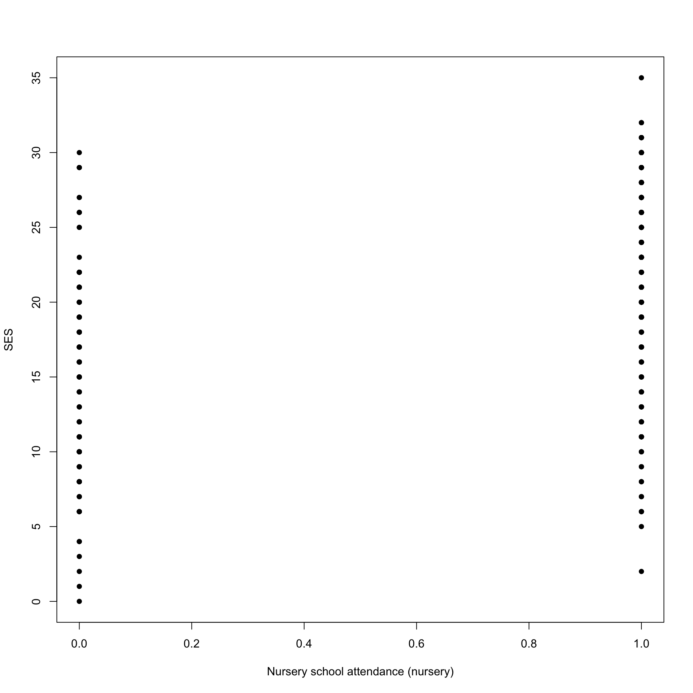

R code (optional)

STAT117: Introduction to Statistics
You want to predict something (e.g., predict stock prices; predict a person’s marathon finish time; predict a student’s social economic status SES)
In reality, the main goal can be the prediction itself, or can be understanding what variables are important for making the prediction.
The “something” you are predicting:
The variable(s) you would use to make a prediction:
SES?
We’ll only cover these two cases:
Covariate)Factor)Jamovi procedure: Analyze – Regression – Linear Regression; Whatever you are predicting goes in the
Dependentbox. Numeric predictors go in theCovariatesbox; categorical predictors go in theFactorsbox.
Identify the dependent (Y) variable. For the independent (X) variable, label it as covariate or factor.
achmat08 to predict achrdg08
Review: is there a relationship between achmat08 and SES? (Pearson r = 0.318)
Can you provide an estimate of SES, if a student’s achmat08 score is
The goal is to find the line that “best fits” the data. The (least squares) regression line minimizes the total “distance” of each point to the line (where distance is measured by the squared difference).
Model Fit Measures
| Model | R | R\(^2\) |
|---|---|---|
| 1 | 0.318 | 0.101 |
Model Coefficients - ses
| Predictor | Estimate | SE | t | p |
|---|---|---|---|---|
| Intercept | 5.082 | 1.8064 | 2.81 | .005 |
| achmat08 | 0.236 | 0.0315 | 7.49 | <.001 |
Recall, the form of a line is given by:
Important: HAT notation is used to denote predicted values. 🧢
\(\hat{Y} = 5.082 + 0.236 \cdot X\)
\(\hat{SES} = 5.082 + 0.236 \cdot achmat08\)
achmat08 score of 45?Be cautious about predicting out of the range of X!
achmat08 score of 10?\(\hat{SES} = 5.082 + 0.236 \cdot achmat08\)
Selected students from the NELS dataset:
| Student ID | achmat08 |
ses |
|---|---|---|
| 374 | 44.80 | 21 |
| 489 | 44.80 | 20 |
| 67 | 70.04 | 27 |
Residual = actual - predicted = ses - \(\hat{SES}\)
What is the residual for student with ID 374?
Model Coefficients - ses
| Predictor | Estimate | SE | t | p |
|---|---|---|---|---|
| Intercept | 5.082 | 1.8064 | 2.81 | .005 |
| achmat08 | 0.236 | 0.0315 | 7.49 | <.001 |
\(\hat{SES} = 5.082 + 0.236 \cdot achmat08\)
(Icecream.sav) We want to use temperature to predict the number of ice cream bars sold.
Write down the regression line.
Provide the value of the intercept and give an interpretation.
Provide the value of the slope and give an interpretation.
For a day with a temperature of ____ Fahrenheit, how many ice cream bars do you estimate to be sold?
For day ID=12, are we over-predicting or under-predicting? Calculate the residual.

Can you estimate a student’s SES if the student…
Predict SES based on Nursery: essentially, this means we predict SES for the two values of Nursery:
Nursery = Yes, we predict SES to be ________Nursery = No, we predict SES to be ________(Analyses -> Exploration -> Descriptives)
Descriptives
| Statistic | nursery |
ses |
|---|---|---|
| N | No | 139 |
| Yes | 281 | |
| Mean | No | 15.1 |
| Yes | 20.7 | |
| Median | No | 16.0 |
| Yes | 21.0 |
We can get the same results from a regression analysis!
Use regression to predict SES using Nursery (coded as 0=No, 1=Yes).
Make sure to put
Nurseryas a factor! (For dichotomous predictors, you can get the same correct coefficients if you put it as a covariate, but this is not recommended, as you will get incorrect information when the variable is nominal or ordinal, or is coded in a non-standard way.)
Write down the regression line.
For a student who did attend nursery, what is the estimated SES?
For a student who did not attend nursery, what is the estimated SES?
Provide the value of the intercept and give an interpretation.
Provide the value of the slope and give an interpretation.
For student with ID=1, what is the residual? Are we over-predicting or under-predicting?
Use regression to predict SES by whether or not the family owned a computer (coded as 0=No, 1=Yes).
Write down the regression line.
For a student whose family had a computer, what is the estimated SES?
For a student whose family did not have a computer, what is the estimated SES?
Provide the value of the intercept and give an interpretation.
Provide the value of the slope and give an interpretation.
For student with ID=1, what is the residual? Are we over-predicting or under-predicting?
The following table is adapted from a 2020 publication, Training for a (half‐)marathon: Training volume and longest endurance run related to performance and running injuries.
For each predictor, interpret the number given in the “Estimate” column.
Significant predictors of marathon finish time (in min):
| Predictor | Estimate |
|---|---|
| Sex (female) | 10.78 |
| BMI (kg/m²) | 1.58 |
| Running experience (years) | -0.42 |
| Longest endurance run (km): <25 | 13.44 |